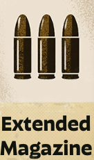
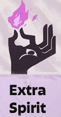
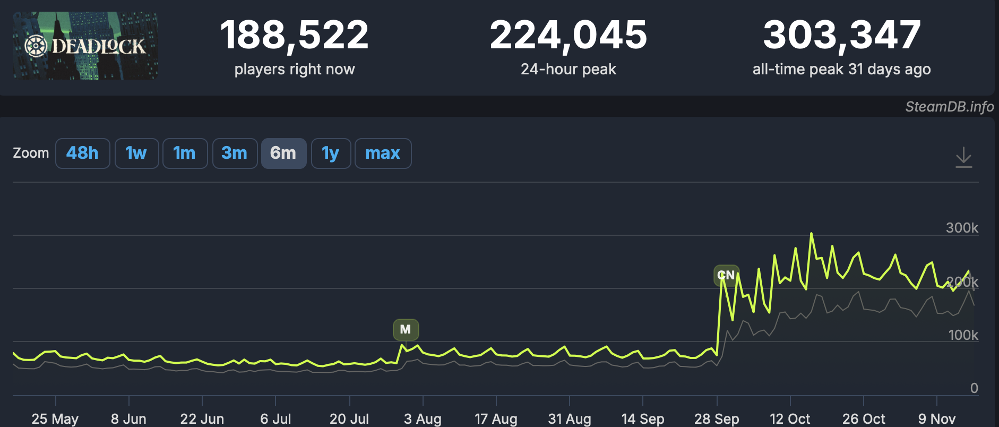

The Weapon category is composed of items geared towards damage and general utility related to weapons, as well as modifiers for existing weapon behavior.

The Spirit category is comprised of items that help the player gain Spirit Power. These items may be focused on for heroes that are looking for more impact from their skills, including improved damage, cooldowns, and longer durations.
